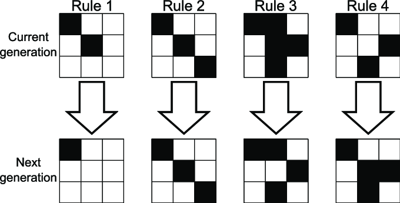
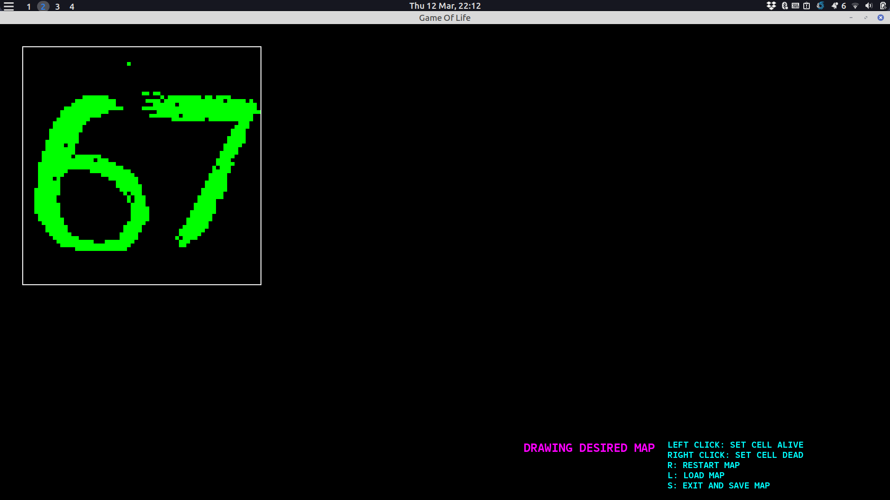

Inverse Conway's Game of Life
A C++ simulation solving the Inverse Game of Life using a Genetic Algorithm and Bitboards.
What is Game of Life ?
Okay I am sorry for the messy image above and straightly answer the question. Conway's Game of Life (GOL) is a game played by itself on a 2D board based on some rules.
Each cell in a board has 2 state (Dead or Alive) and will interchange based on:
1. Any live cell with fewer than two live neighbours dies, as if by underpopulation.
2. Any live cell with two or three live neighbours lives on to the next generation.
3. Any live cell with more than three live neighbours dies, as if by overpopulation.
4. Any dead cell with exactly three live neighbours becomes a live cell, as if by reproduction.
1. Any live cell with fewer than two live neighbours dies, as if by underpopulation.
2. Any live cell with two or three live neighbours lives on to the next generation.
3. Any live cell with more than three live neighbours dies, as if by overpopulation.
4. Any dead cell with exactly three live neighbours becomes a live cell, as if by reproduction.
There is a fun fact that this game is proved to be Turing Complete, meaning it can theoretically simulate a computer.
Because it can perform basic logic gates like NAND, NOR.

What am I gonna do with here ?
The GOL athough has some fixed patterns, it just a chaotic, become unrecognizable after few phases, and unreversible. Therefore, I try applying Machine Learning from scratch to recreate an image from a random seed of GOL.
I choose the classic Genetic Algorithm (GA) for programming, comes along with the Bitboard data structure optimization, which allow me to run with larger genomes. Implementing Bitboard is a rough journey, battling with bit operation and hard stuck to understand (even with Gemini helping me). When coding GA, I found out that there're many variants for the Selection, Crossover and each will give the output diferrently.
About the detail, I suggest you to visit my github for more information
How does it run?
At first, I really satisfy with the outcomes, it give a "kinda clear" image that look the same as the desired image. Looking closely to the metrics, those are just roughly quite good, may need more optimization. At the end of the day, the project gave me a try with practicing implementing OOP, ML from scratch and a "recognizable" outputs.

First draw the image we want to recreate The sorted preditions after running GA for a while
The sorted preditions after running GA for a while